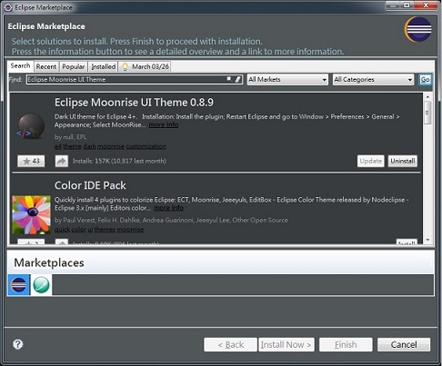
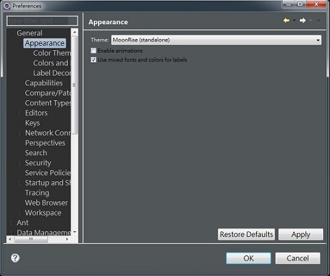
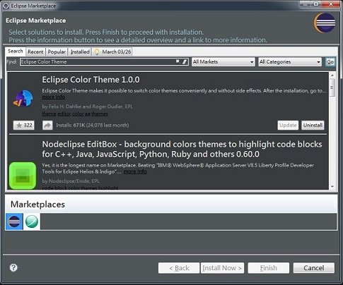
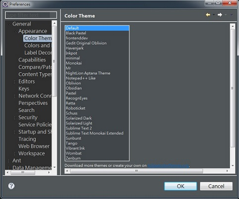
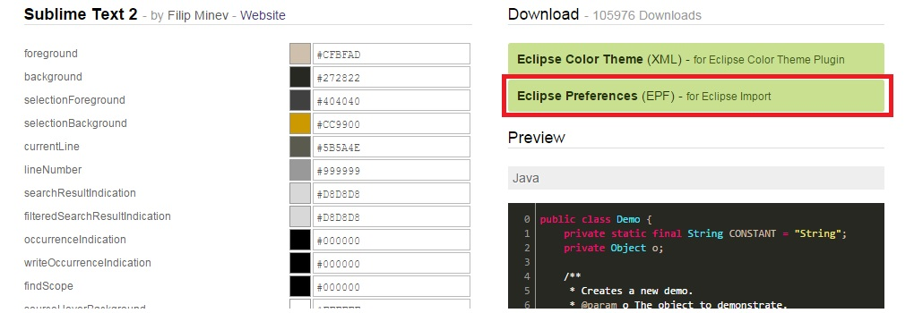
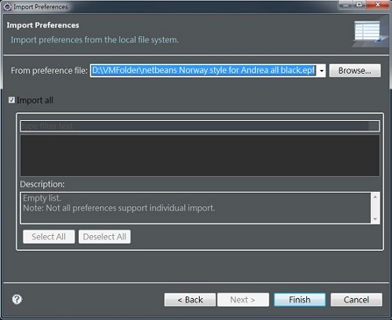

Posted on May 16, 2015 at 11:00 PM
身為一個軟體工程師，自然會長時間盯著螢幕。但白底看久了傷眼又傷神，對於最常使用的IDE Eclipse，我就千方百計的想將他調為暗色系的。
首先想變成暗色系的地方兩個，一個是Eclipse的UI部分，另一個則是Coding的頁面部分
● Eclipse UI部分，步驟如下
- 工具列 → Help → Eclipse Marketplace
- Search "Eclipse Moonrise UI Theme" → Click "Go" → Install "Eclipse Moonrise UI Theme"
- 工具列 → Window → Preference → General → Appearance → Theme 選擇 MoonRise


● Eclipse Coding部分，有以下兩方法
方法 1
- 工具列 → Help → Eclipse Marketplace
- Search "Eclipse Color Theme" → Click "Go" → Install "Eclipse Color Theme"
- 工具列 → Window → Preference → General → Appearance → Color Theme 選擇 喜歡的主題


方法 2


我改為暗色系後，有非常明顯感覺到眼睛不再容易疲勞，真心推薦。實際使用上，一開始可能會稍有不習慣，但過一陣子後，就回不去啦~~~。